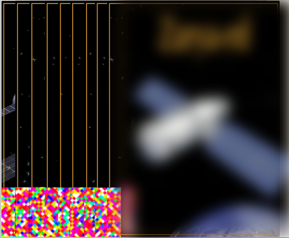
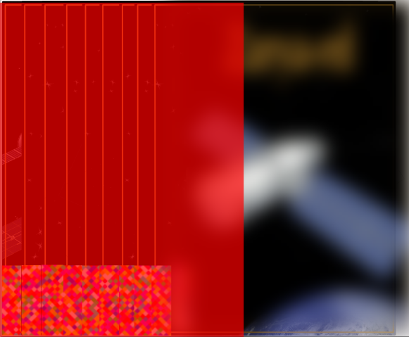

Game Strategy
To become a master at the game, here are some strategies you should consider:
1. Start the game by selecting the Home Card, keeping its title face-down.
2. Read the riddle or question to begin the challenge.
3. Choose an appropriate Action Card (out of 10) based on the clues provided by the riddle or question.
4. After solving or performing the action on the first Action Card, proceed to the next Action Card in sequence.
5. Some Action Cards have a corresponding Hint Card that helps solve the puzzle. Make sure to utilize the Hint Card when available.
6. Ensure that the title of the Action Card is related to the picture of the Hint Card for proper correlation.
7. Group the cards in the sequence of play as they are performed for better organization.
Additional Tip:
Make sure to use magnetic sleeves to keep the cards organized in the order you have solved them. This helps maintain the flow of the game and ensures that the cards remain in the correct sequence.
The magnetic sleeves are used to organize the cards in microgravity on the walls of the ISS


Anaglyph code
The anaglyph code in Mission I.S.S.-possible is a hidden visual puzzle that can only be deciphered using a red reveal filter. It is designed using overlapping layers of red and cyan images or text, which appear jumbled or unreadable to the naked eye. When players use the red filter, the red parts of the anaglyph are neutralized, revealing the hidden message or code embedded in the cyan layer. This technique creates an engaging and interactive element where players must solve the puzzle by correctly arranging cards and using the red reveal filter to uncover the final code needed to escape the ISS.
